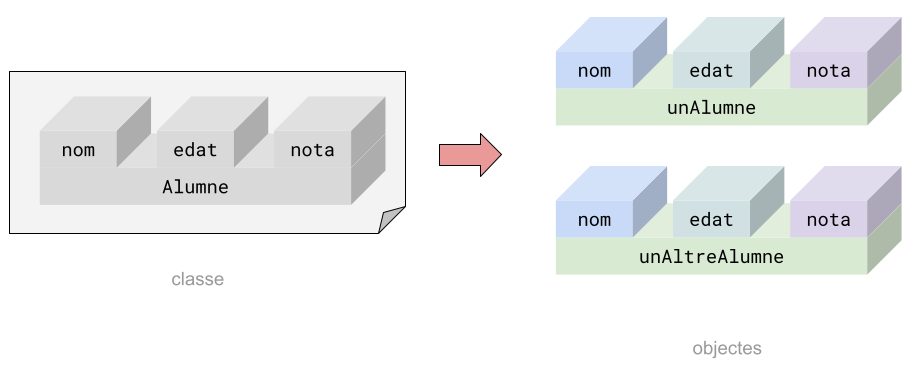
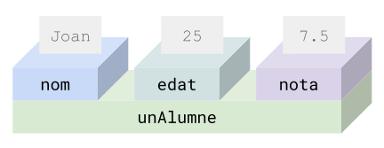

Classes i objectes
Un objecte és una agrupació de variables (i mètodes, que veurem més endavant). S'utilitzen per a organitzar el codi, agrupant aquelles
variables i mètodes que estan relacionades entre sí.
Si seguim l'analogia de les capses que vam utilitzar per a les variables i arrays, podríem veure un objecte com una capsa
que a dintre conté altres capses.
Per exemple, si estem fent un programa per a gestionar un institut, segurament necessitem guardar dades dels alumnes.
Per exemple, podríem utilitzar aquestes tres variables per a guardar les dades d'un alumne:
String nom = "Joan";
int edat = 25;
float nota = 7.5f;

Un objecte ens permetria tenir aquestes tres variables agrupades.
Per a crear objectes, primer s'ha de definir una classe especificant quines variables tindran aquests objectes.
Definim la classe Alumne i especifiquem les tres variables que tindran els objectes d'aquesta classe:
class Alumne {
String nom;
int edat;
float nota;
}
Un cop definida la classe, es poden crear objectes a partir d'ella d'aquesta manera:
Alumne unAlumne = new Alumne();
A partir de la definició de la classe Alumne hem creat un objecte i l'hem assignat a la variable unAlumne.
L'objecte al que fa referència la variable unAlumne conté totes les variables que s'han definit a classe Alumne.
Se sol dir que la definició d'una classe és com el plànol amb el qual s'han de construir els objectes d'aquesta classe.

Podem utilitzar la definició de la classe Alumne per a crear nous objectes d'aquesta classe. Per exemple, podem crear
un nou objecte per a guardar les dades d'un altre alumne:
Alumne unAltreAlumne = new Alumne();

Per a accedir a les variables que hi ha a dintre d'un objecte utilitzarem l'operador punt .:
unAlumne.nom = "Joan";
unAlumne.edat = 25;
unAlumne.nota = 7.5f;

Així doncs, la sintaxi per a definir una classe és:
class NomClasse {
tipus nomCamp;
tipus nomCamp2;
...
}
Per a crear objectes d'una classe:
NomClasse nomObjecte = new NomClasse();
Per a accedir als camps d'un objecte utilitzarem:
nomObjecte.nomCamp